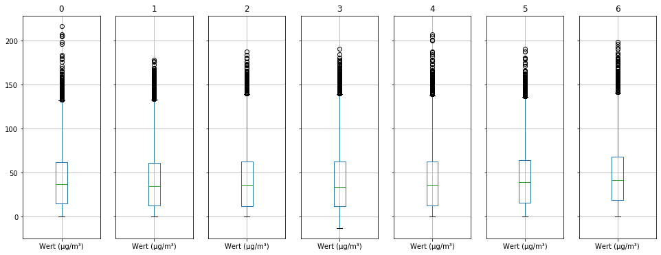
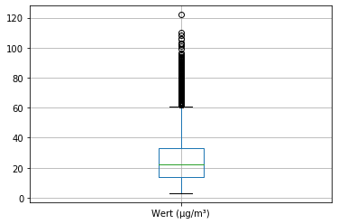
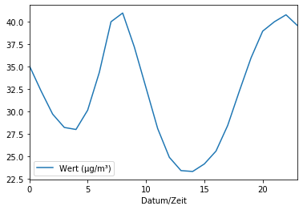
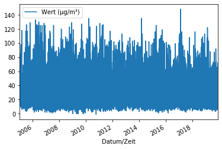
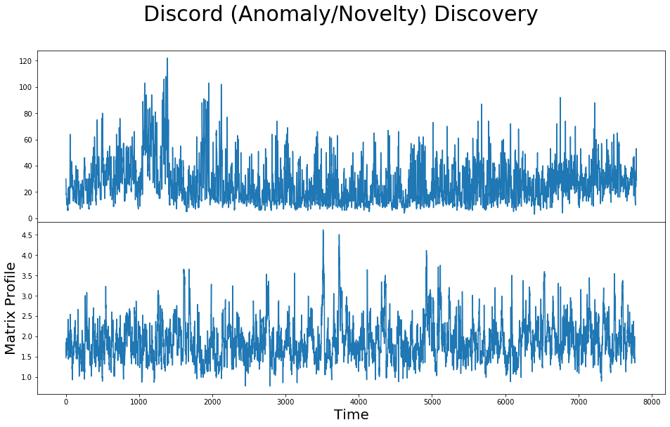

import numpy as np
import pandas as pd
from pandas import DataFrame
pd.options.display.max_rows = 10
Create a HDF Store for serializing the data
store = pd.HDFStore('store.h5')
ADAC - df0 mit Abgasnorm Euro 6d-Temp, Euro 6d
ADAC - df0 mit Abgasnorm Euro 6d-Temp, Euro 6d
url = "https://www.adac.de/rund-ums-fahrzeug/auto-kaufen-verkaufen/neuwagenkauf/euro-6d-temp-modelle"
res = pd.read_html(url, header=0)
Concatenate all tables and reindex
df0 = pd.concat((elt for elt in res), ignore_index=True)
df0.rename({
'Markt- einführung': 'Markteinfuehrung',
'Hubraum in ccm': 'Hubraum',
'Leistung in KW': 'Leistung'
}, axis=1, inplace=True)
Convert Markteinfuehrung col to datetime
For date manipulation, see for ex.https://www.python-kurs.eu/python3_time_and_date.php
import locale
locale.setlocale(locale.LC_ALL, 'de_DE.UTF-8')
pat = r"^(\w{3}).*(\d{2})$"
repl = lambda m: f"{m.group(1)} {m.group(2)}"
df0.Markteinfuehrung = df0.Markteinfuehrung \
.str.replace('^v', 'Nov') \
.str.replace('(Mrz|Mar)', 'Mär') \
.str.replace(pat, repl)
df0.Markteinfuehrung = pd.to_datetime(df0.Markteinfuehrung, format='%b %y', errors='coerce')
df0 = df0.astype({
'Hersteller': 'category',
'Modell': str,
'Motorart': 'category',
'Abgasnorm': 'category'
})
df0.dtypes
Hersteller category
Modell object
Motorart category
Hubraum int64
Leistung int64
Abgasnorm category
Markteinfuehrung datetime64[ns]
dtype: object
df0.sample(3)
| Hersteller | Modell | Motorart | Hubraum | Leistung | Abgasnorm | Markteinfuehrung | |
|---|---|---|---|---|---|---|---|
| 2677 | VW | Caddy Maxi Kombi 2.0 TDI SCR | Diesel | 1968 | 75 | Euro 6d-TEMP-EVAP | 2018-10-01 |
| 690 | Dacia | Dokker Blue dCi 75 | Diesel | 1461 | 55 | Euro 6d-TEMP-EVAP | 2018-09-01 |
| 1226 | Lamborghini | Huracán LP580-2 | Otto | 5204 | 426 | Euro 6d-TEMP | 2018-09-01 |
df0.memory_usage()
Index 128
Hersteller 4506
Modell 22992
Motorart 3082
Hubraum 22992
Leistung 22992
Abgasnorm 3250
Markteinfuehrung 22992
dtype: int64
Save to the store
store.put('ADAC', df0, format='table')
print(store.info())
<class 'pandas.io.pytables.HDFStore'>
File path: store.h5
/ADAC frame_table (typ->appendable,nrows->2874,ncols->7,indexers->[index],dc->[])
/ADAC/meta/values_block_0/meta series_table (typ->appendable,nrows->44,ncols->1,indexers->[index],dc->[values])
/ADAC/meta/values_block_1/meta series_table (typ->appendable,nrows->6,ncols->1,indexers->[index],dc->[values])
/ADAC/meta/values_block_2/meta series_table (typ->appendable,nrows->7,ncols->1,indexers->[index],dc->[values])
store.get('/ADAC')
| Hersteller | Modell | Motorart | Hubraum | Leistung | Abgasnorm | Markteinfuehrung | |
|---|---|---|---|---|---|---|---|
| 0 | Abarth | 595 | Otto | 1368 | 107 | Euro 6d-TEMP-EVAP | 2018-09-01 |
| 1 | Abarth | 595 Pista | Otto | 1368 | 118 | Euro 6d-TEMP-EVAP | 2018-09-01 |
| 2 | Abarth | 595 Turismo | Otto | 1368 | 121 | Euro 6d-TEMP-EVAP | 2018-09-01 |
| 3 | Abarth | 595 Competizione | Otto | 1368 | 132 | Euro 6d-TEMP-EVAP | 2018-09-01 |
| 4 | Abarth | 595C | Otto | 1368 | 107 | Euro 6d-TEMP-EVAP | 2018-09-01 |
| ... | ... | ... | ... | ... | ... | ... | ... |
| 2869 | VW | Touran 2.0 TDI SCR | Diesel | 1968 | 140 | Euro 6d-TEMP | 2019-01-01 |
| 2870 | VW | up! 1.0 | Otto | 999 | 44 | Euro 6d-TEMP | 2018-08-01 |
| 2871 | VW | up! 1.0 | Otto | 999 | 55 | Euro 6d-TEMP | 2018-08-01 |
| 2872 | VW | up! 1.0 TSI | Otto | 999 | 66 | Euro 6d-TEMP | 2018-09-01 |
| 2873 | VW | up! GTI | Otto | 999 | 85 | Euro 6d-TEMP | 2018-01-01 |
2874 rows × 7 columns
Umweltdaten Nürnberg
Messstation Jakobsplatz - Stadt Nürnberg from datetime import datetime today = datetime.today()
from string import Template
url = Template(("http://umweltdaten.nuernberg.de/csv/aussenluft/stadt-nuernberg/" "archiv/csv-export/SUN/{where}/{what}/" "individuell/{first}/{until}/export.csv"))
make_url = lambda where, what, year: url.substitute( where=where, what=what, first=f"01.01.{year}", until=f'31.12.{year}')
def get_air_data_in_nuremberg(where: str, what: str, year: int):
opts = {
'skiprows': range(0, 10),
'encoding': 'ISO-8859-1',
'sep': ';',
'parse_dates': [0],
'index_col': 0,
'na_values': ['-']
}
url = (f"http://umweltdaten.nuernberg.de/csv/aussenluft/stadt-nuernberg/"
f"archiv/csv-export/SUN/{where}/{what}/"
f"individuell/01.01.{year}/31.12.{year}/export.csv")
return pd.read_csv(url, **opts)
df = pd.concat([get_air_data_in_nuremberg(where="nuernberg-jakobsplatz", what="stickstoffdioxid", year=y) for y in range(2005, 2020)])
http://umweltdaten.nuernberg.de/csv/aussenluft/stadt-nuernberg/messstation-jakobsplatz/feinstaub-pm10/csv-export/SUN/nuernberg-jakobsplatz/staubpartikel-pm10/7-Tages-Ansicht/export.csv
Nu2HD5 = {
'nuernberg-jakobsplatz': 'JAKOBSPALTZ',
'nuernberg-flugfeld': 'FLUGFELD',
'stickstoffmonoxid': 'NO',
'stickstoffdioxid': 'NO2',
'ozon': 'O3',
'staubpartikel-pm10': 'PM10',
'staub-pm-25': 'PM25'
}
from itertools import product
for what, where in product([k for k in Nu2HD5.keys() if 'nuernberg' not in k],
[k for k in Nu2HD5.keys() if 'nuernberg' in k]):
try:
df = pd.concat([get_air_data_in_nuremberg(where=where, what=what, year=y) for y in range(2005, 2020)])
tableName = f"AIR/{Nu2HD5[where]}/{Nu2HD5[what]}"
store.put(tableName, df, format='table')
except Exception as e:
print(e)
print(store.info())
<class 'pandas.io.pytables.HDFStore'>
File path: store.h5
/ADAC frame_table (typ->appendable,nrows->2874,ncols->7,indexers->[index],dc->[])
/ADAC/meta/values_block_0/meta series_table (typ->appendable,nrows->44,ncols->1,indexers->[index],dc->[values])
/ADAC/meta/values_block_1/meta series_table (typ->appendable,nrows->6,ncols->1,indexers->[index],dc->[values])
/ADAC/meta/values_block_2/meta series_table (typ->appendable,nrows->7,ncols->1,indexers->[index],dc->[values])
/AIR/FLUGFELD/NO frame_table (typ->appendable,nrows->127817,ncols->1,indexers->[index],dc->[])
/AIR/FLUGFELD/NO2 frame_table (typ->appendable,nrows->127779,ncols->1,indexers->[index],dc->[])
/AIR/FLUGFELD/O3 frame_table (typ->appendable,nrows->129541,ncols->1,indexers->[index],dc->[])
/AIR/FLUGFELD/PM10 frame_table (typ->appendable,nrows->130374,ncols->1,indexers->[index],dc->[])
/AIR/FLUGFELD/PM25 frame_table (typ->appendable,nrows->103667,ncols->1,indexers->[index],dc->[])
/AIR/JAKOBSPALTZ/NO frame_table (typ->appendable,nrows->123168,ncols->1,indexers->[index],dc->[])
/AIR/JAKOBSPALTZ/NO2 frame_table (typ->appendable,nrows->123353,ncols->1,indexers->[index],dc->[])
/AIR/JAKOBSPALTZ/O3 frame_table (typ->appendable,nrows->125972,ncols->1,indexers->[index],dc->[])
/AIR/JAKOBSPALTZ/PM10 frame_table (typ->appendable,nrows->126952,ncols->1,indexers->[index],dc->[])
/AIR/JAKOBSPALTZ/PM25 frame_table (typ->appendable,nrows->87343,ncols->1,indexers->[index],dc->[])
df1 = store.get('/AIR/JAKOBSPALTZ/O3')
df1.head()
| Wert (µg/m³) | |
|---|---|
| Datum/Zeit | |
| 2005-05-24 21:00:00 | 59.0 |
| 2005-01-06 00:00:00 | 57.0 |
| 2005-01-06 01:00:00 | 49.0 |
| 2005-01-06 02:00:00 | 51.0 |
| 2005-01-06 03:00:00 | 34.0 |
df1.groupby(df1.index.weekday).boxplot(layout=(1,7), figsize=(16, 6));

with pandas
dfk = pd.read_csv(make_url(where="nuernberg-jakobsplatz", what="stickstoffdioxid", year=2019), **opts)
The data will be retrieved year for year, see no
"Da bei den Abfragen möglicherweise große Datenmengen entstehen, wird empfohlen maximal 12 Monate als Bezugszeitraum anzugeben und bei Bedarf mehrere Abfragen durchzuführen."
with pyarrow
from pyarrow import csv
from pyarrow.csv import (ReadOptions, ParseOptions, ConvertOptions)
read_opts = ReadOptions(skip_rows=13, column_names=["Date", "NO2"])
parse_opts = ParseOptions(delimiter=';')
conv_opts = ConvertOptions(column_types={'NO2': pa.int32()}, null_values=["-"])
# Date are not an
# 'Date': pa.timestamp('s'),
from io import (BytesIO, StringIO)
bio = BytesIO(r.content.decode(encoding='ISO-8859-1').encode())
table = csv.read_csv(bio, read_options=read_opts, parse_options=parse_opts, convert_options=conv_opts)
table.schema
Date: string
NO2: int32
dfk.boxplot()
<matplotlib.axes._subplots.AxesSubplot at 0x7f6fe5bd2710>

import pyarrow as pa
from pyarrow import csv
from requests import Session
year = 1
u1 = url.substitute(what="stickstoffdioxid",
first=today.strftime('%d.%m.') + str(today.year - year - 1),
until=today.strftime('%d.%m.') + str(today.year - year))
s = Session()
r = s.get(u1)
table.schema
Date: string
NO2: int32
table.to_pandas()
Date object
NO2 float64
dtype: object
df1 = pd.concat((pd.read_csv(url.substitute(what="stickstoffdioxid",
first=today.strftime('%d.%m.') + str(today.year - year - 1),
until=today.strftime('%d.%m.') + str(today.year - year)),
**opts) for year in range(15)))
df1.info()
<class 'pandas.core.frame.DataFrame'>
DatetimeIndex: 112269 entries, 2019-01-01 01:00:00 to 2005-11-27 23:00:00
Data columns (total 1 columns):
Wert (µg/m³) 111358 non-null float64
dtypes: float64(1)
memory usage: 1.7 MB
df1['Wert (µg/m³)'].metadata = {}
df1['Wert (µg/m³)'].iloc[:30]
Datum/Zeit
2019-01-01 01:00:00 30.0
2019-01-01 02:00:00 29.0
2019-01-01 03:00:00 24.0
2019-01-01 04:00:00 22.0
2019-01-01 05:00:00 20.0
...
2019-02-01 02:00:00 8.0
2019-02-01 03:00:00 6.0
2019-02-01 04:00:00 7.0
2019-02-01 05:00:00 6.0
2019-02-01 06:00:00 8.0
Name: Wert (µg/m³), Length: 30, dtype: float64
week_df = df1.groupby(df1.index.weekday).mean()
df1.groupby(df1.index.weekday).describe()
| Wert (µg/m³) | ||||||||
|---|---|---|---|---|---|---|---|---|
| count | mean | std | min | 25% | 50% | 75% | max | |
| Datum/Zeit | ||||||||
| 0 | 15849.0 | 30.795003 | 17.231654 | 1.0 | 18.0 | 27.0 | 40.0 | 133.0 |
| 1 | 15949.0 | 31.919744 | 17.604728 | 0.0 | 19.0 | 28.0 | 41.0 | 129.0 |
| 2 | 15943.0 | 32.267578 | 17.488338 | 0.0 | 19.0 | 29.0 | 42.0 | 148.0 |
| 3 | 15954.0 | 32.525385 | 17.798968 | 1.0 | 19.0 | 29.0 | 42.0 | 135.0 |
| 4 | 15959.0 | 31.770725 | 17.249226 | -1.0 | 19.0 | 28.0 | 41.0 | 135.0 |
| 5 | 15816.0 | 28.693349 | 15.996195 | 0.0 | 17.0 | 25.0 | 37.0 | 129.0 |
| 6 | 15888.0 | 25.967082 | 16.686306 | 0.0 | 14.0 | 22.0 | 34.0 | 128.0 |
"Although fine particle OC concentrations did not correlate with day of the week, EC concentrations showed a significant weekly pattern, with the highest concentration during the middle of the workweek and the lowest concentration on Sundays." https://www.ncbi.nlm.nih.gov/pubmed/15303295
df1.groupby(df1.index.weekday).boxplot(layout=(1,7), figsize=(16, 6));

gp = df1.groupby(df1.index.weekday)
%timeit df1[df1.index.weekday == 2]
7.61 ms ± 75.9 µs per loop (mean ± std. dev. of 7 runs, 100 loops each)
%timeit df1.groupby(df1.index.weekday).get_group(2)
10.2 ms ± 73.6 µs per loop (mean ± std. dev. of 7 runs, 100 loops each)
df_wend = df1[df1.index.weekday == 2]
df_wend.groupby(df_wend.index.hour).mean().plot()
<matplotlib.axes._subplots.AxesSubplot at 0x7f6ff53afc88>

import seaborn as sns
df_wend_h = df_wend.groupby(df_wend.index.hour)
df_wend_h.describe()
| Wert (µg/m³) | ||||||||
|---|---|---|---|---|---|---|---|---|
| count | mean | std | min | 25% | 50% | 75% | max | |
| Datum/Zeit | ||||||||
| 0 | 667.0 | 35.112444 | 19.408852 | 0.0 | 20.0 | 30.0 | 46.00 | 117.0 |
| 1 | 665.0 | 32.306767 | 18.458983 | 0.0 | 18.0 | 28.0 | 44.00 | 105.0 |
| 2 | 665.0 | 29.712782 | 17.153460 | 0.0 | 16.0 | 25.0 | 40.00 | 94.0 |
| 3 | 666.0 | 28.234234 | 15.617778 | 0.0 | 16.0 | 25.0 | 37.00 | 92.0 |
| 4 | 667.0 | 28.008996 | 14.758310 | 1.0 | 16.0 | 25.0 | 37.00 | 86.0 |
| ... | ... | ... | ... | ... | ... | ... | ... | ... |
| 19 | 667.0 | 35.962519 | 18.899770 | 6.0 | 21.0 | 32.0 | 46.00 | 144.0 |
| 20 | 668.0 | 38.938623 | 19.969410 | 6.0 | 25.0 | 36.0 | 48.25 | 148.0 |
| 21 | 666.0 | 39.978979 | 20.332119 | 4.0 | 25.0 | 36.0 | 50.00 | 125.0 |
| 22 | 665.0 | 40.756391 | 20.704699 | 6.0 | 26.0 | 37.0 | 52.00 | 124.0 |
| 23 | 665.0 | 39.533835 | 20.385202 | 5.0 | 24.0 | 36.0 | 51.00 | 118.0 |
24 rows × 8 columns
sns.pointplot(x="day", y="tip", data=tips, ci=68)
df_wend_h.boxplot(subplots=False, figsize=(16, 6), column=list(df_wend_h.groups.keys()))
<matplotlib.axes._subplots.AxesSubplot at 0x7f6fe55677b8>

df_wend_h.describe()
| Wert (µg/m³) | ||||||||
|---|---|---|---|---|---|---|---|---|
| count | mean | std | min | 25% | 50% | 75% | max | |
| Datum/Zeit | ||||||||
| 0 | 667.0 | 35.112444 | 19.408852 | 0.0 | 20.0 | 30.0 | 46.00 | 117.0 |
| 1 | 665.0 | 32.306767 | 18.458983 | 0.0 | 18.0 | 28.0 | 44.00 | 105.0 |
| 2 | 665.0 | 29.712782 | 17.153460 | 0.0 | 16.0 | 25.0 | 40.00 | 94.0 |
| 3 | 666.0 | 28.234234 | 15.617778 | 0.0 | 16.0 | 25.0 | 37.00 | 92.0 |
| 4 | 667.0 | 28.008996 | 14.758310 | 1.0 | 16.0 | 25.0 | 37.00 | 86.0 |
| ... | ... | ... | ... | ... | ... | ... | ... | ... |
| 19 | 667.0 | 35.962519 | 18.899770 | 6.0 | 21.0 | 32.0 | 46.00 | 144.0 |
| 20 | 668.0 | 38.938623 | 19.969410 | 6.0 | 25.0 | 36.0 | 48.25 | 148.0 |
| 21 | 666.0 | 39.978979 | 20.332119 | 4.0 | 25.0 | 36.0 | 50.00 | 125.0 |
| 22 | 665.0 | 40.756391 | 20.704699 | 6.0 | 26.0 | 37.0 | 52.00 | 124.0 |
| 23 | 665.0 | 39.533835 | 20.385202 | 5.0 | 24.0 | 36.0 | 51.00 | 118.0 |
24 rows × 8 columns
df_wend_h.boxplot(by='Datum/Zeit', figsize=(16, 10));
---------------------------------------------------------------------------
KeyboardInterrupt Traceback (most recent call last)
<ipython-input-204-ee7cf848b6f4> in <module>
----> 1 df_wend_h.boxplot(by='Datum/Zeit', figsize=(16, 10));
/opt/conda/lib/python3.7/site-packages/pandas/plotting/_core.py in boxplot_frame_groupby(grouped, subplots, column, fontsize, rot, grid, ax, figsize, layout, sharex, sharey, **kwds)
498 sharex=sharex,
499 sharey=sharey,
--> 500 **kwds
501 )
502
/opt/conda/lib/python3.7/site-packages/pandas/plotting/_matplotlib/boxplot.py in boxplot_frame_groupby(grouped, subplots, column, fontsize, rot, grid, ax, figsize, layout, sharex, sharey, **kwds)
390 for (key, group), ax in zip(grouped, axes):
391 d = group.boxplot(
--> 392 ax=ax, column=column, fontsize=fontsize, rot=rot, grid=grid, **kwds
393 )
394 ax.set_title(pprint_thing(key))
/opt/conda/lib/python3.7/site-packages/pandas/plotting/_core.py in boxplot_frame(self, column, by, ax, fontsize, rot, grid, figsize, layout, return_type, **kwds)
418 layout=layout,
419 return_type=return_type,
--> 420 **kwds
421 )
422
/opt/conda/lib/python3.7/site-packages/pandas/plotting/_matplotlib/boxplot.py in boxplot_frame(self, column, by, ax, fontsize, rot, grid, figsize, layout, return_type, **kwds)
353 layout=layout,
354 return_type=return_type,
--> 355 **kwds
356 )
357 plt.draw_if_interactive()
/opt/conda/lib/python3.7/site-packages/pandas/plotting/_matplotlib/boxplot.py in boxplot(data, column, by, ax, fontsize, rot, grid, figsize, layout, return_type, **kwds)
300 ax=ax,
301 layout=layout,
--> 302 return_type=return_type,
303 )
304 else:
/opt/conda/lib/python3.7/site-packages/pandas/plotting/_matplotlib/boxplot.py in _grouped_plot_by_column(plotf, data, columns, by, numeric_only, grid, figsize, ax, layout, return_type, **kwargs)
205 gp_col = grouped[col]
206 keys, values = zip(*gp_col)
--> 207 re_plotf = plotf(keys, values, ax, **kwargs)
208 ax.set_title(col)
209 ax.set_xlabel(pprint_thing(by))
/opt/conda/lib/python3.7/site-packages/pandas/plotting/_matplotlib/boxplot.py in plot_group(keys, values, ax)
262 keys = [pprint_thing(x) for x in keys]
263 values = [np.asarray(remove_na_arraylike(v)) for v in values]
--> 264 bp = ax.boxplot(values, **kwds)
265 if fontsize is not None:
266 ax.tick_params(axis="both", labelsize=fontsize)
/opt/conda/lib/python3.7/site-packages/matplotlib/cbook/deprecation.py in wrapper(*args, **kwargs)
305 f"for the old name will be dropped %(removal)s.")
306 kwargs[new] = kwargs.pop(old)
--> 307 return func(*args, **kwargs)
308
309 # wrapper() must keep the same documented signature as func(): if we
/opt/conda/lib/python3.7/site-packages/matplotlib/__init__.py in inner(ax, data, *args, **kwargs)
1599 def inner(ax, *args, data=None, **kwargs):
1600 if data is None:
-> 1601 return func(ax, *map(sanitize_sequence, args), **kwargs)
1602
1603 bound = new_sig.bind(ax, *args, **kwargs)
/opt/conda/lib/python3.7/site-packages/matplotlib/axes/_axes.py in boxplot(self, x, notch, sym, vert, whis, positions, widths, patch_artist, bootstrap, usermedians, conf_intervals, meanline, showmeans, showcaps, showbox, showfliers, boxprops, labels, flierprops, medianprops, meanprops, capprops, whiskerprops, manage_ticks, autorange, zorder)
3770 meanline=meanline, showfliers=showfliers,
3771 capprops=capprops, whiskerprops=whiskerprops,
-> 3772 manage_ticks=manage_ticks, zorder=zorder)
3773 return artists
3774
/opt/conda/lib/python3.7/site-packages/matplotlib/cbook/deprecation.py in wrapper(*args, **kwargs)
305 f"for the old name will be dropped %(removal)s.")
306 kwargs[new] = kwargs.pop(old)
--> 307 return func(*args, **kwargs)
308
309 # wrapper() must keep the same documented signature as func(): if we
/opt/conda/lib/python3.7/site-packages/matplotlib/axes/_axes.py in bxp(self, bxpstats, positions, widths, vert, patch_artist, shownotches, showmeans, showcaps, showbox, showfliers, boxprops, whiskerprops, flierprops, medianprops, capprops, meanprops, meanline, manage_ticks, zorder)
4094
4095 # draw the medians
-> 4096 medians.extend(doplot(med_x, med_y, **final_medianprops))
4097
4098 # maybe draw the means
/opt/conda/lib/python3.7/site-packages/matplotlib/axes/_axes.py in doplot(*args, **kwargs)
3996 if vert:
3997 def doplot(*args, **kwargs):
-> 3998 return self.plot(*args, **kwargs)
3999
4000 def dopatch(xs, ys, **kwargs):
/opt/conda/lib/python3.7/site-packages/matplotlib/axes/_axes.py in plot(self, scalex, scaley, data, *args, **kwargs)
1667 for line in lines:
1668 self.add_line(line)
-> 1669 self.autoscale_view(scalex=scalex, scaley=scaley)
1670 return lines
1671
/opt/conda/lib/python3.7/site-packages/matplotlib/axes/_base.py in autoscale_view(self, tight, scalex, scaley)
2493 handle_single_axis(
2494 scalex, self._autoscaleXon, self._shared_x_axes, 'intervalx',
-> 2495 'minposx', self.xaxis, self._xmargin, x_stickies, self.set_xbound)
2496 handle_single_axis(
2497 scaley, self._autoscaleYon, self._shared_y_axes, 'intervaly',
/opt/conda/lib/python3.7/site-packages/matplotlib/axes/_base.py in handle_single_axis(scale, autoscaleon, shared_axes, interval, minpos, axis, margin, stickies, set_bound)
2460 x0, x1 = getattr(bb, interval)
2461 locator = axis.get_major_locator()
-> 2462 x0, x1 = locator.nonsingular(x0, x1)
2463
2464 # Add the margin in figure space and then transform back, to handle
/opt/conda/lib/python3.7/site-packages/matplotlib/ticker.py in nonsingular(self, v0, v1)
1523 def nonsingular(self, v0, v1):
1524 """Expand a range as needed to avoid singularities."""
-> 1525 return mtransforms.nonsingular(v0, v1, expander=.05)
1526
1527 def view_limits(self, vmin, vmax):
/opt/conda/lib/python3.7/site-packages/matplotlib/transforms.py in nonsingular(vmin, vmax, expander, tiny, increasing)
2825 swapped = True
2826
-> 2827 maxabsvalue = max(abs(vmin), abs(vmax))
2828 if maxabsvalue < (1e6 / tiny) * np.finfo(float).tiny:
2829 vmin = -expander
KeyboardInterrupt:
Error in callback <function flush_figures at 0x7f6ff8de0d90> (for post_execute):
---------------------------------------------------------------------------
KeyboardInterrupt Traceback (most recent call last)
/opt/conda/lib/python3.7/site-packages/ipykernel/pylab/backend_inline.py in flush_figures()
115 # ignore the tracking, just draw and close all figures
116 try:
--> 117 return show(True)
118 except Exception as e:
119 # safely show traceback if in IPython, else raise
/opt/conda/lib/python3.7/site-packages/ipykernel/pylab/backend_inline.py in show(close, block)
37 display(
38 figure_manager.canvas.figure,
---> 39 metadata=_fetch_figure_metadata(figure_manager.canvas.figure)
40 )
41 finally:
/opt/conda/lib/python3.7/site-packages/IPython/core/display.py in display(include, exclude, metadata, transient, display_id, *objs, **kwargs)
311 publish_display_data(data=obj, metadata=metadata, **kwargs)
312 else:
--> 313 format_dict, md_dict = format(obj, include=include, exclude=exclude)
314 if not format_dict:
315 # nothing to display (e.g. _ipython_display_ took over)
/opt/conda/lib/python3.7/site-packages/IPython/core/formatters.py in format(self, obj, include, exclude)
178 md = None
179 try:
--> 180 data = formatter(obj)
181 except:
182 # FIXME: log the exception
</opt/conda/lib/python3.7/site-packages/decorator.py:decorator-gen-9> in __call__(self, obj)
/opt/conda/lib/python3.7/site-packages/IPython/core/formatters.py in catch_format_error(method, self, *args, **kwargs)
222 """show traceback on failed format call"""
223 try:
--> 224 r = method(self, *args, **kwargs)
225 except NotImplementedError:
226 # don't warn on NotImplementedErrors
/opt/conda/lib/python3.7/site-packages/IPython/core/formatters.py in __call__(self, obj)
339 pass
340 else:
--> 341 return printer(obj)
342 # Finally look for special method names
343 method = get_real_method(obj, self.print_method)
/opt/conda/lib/python3.7/site-packages/IPython/core/pylabtools.py in <lambda>(fig)
242
243 if 'png' in formats:
--> 244 png_formatter.for_type(Figure, lambda fig: print_figure(fig, 'png', **kwargs))
245 if 'retina' in formats or 'png2x' in formats:
246 png_formatter.for_type(Figure, lambda fig: retina_figure(fig, **kwargs))
/opt/conda/lib/python3.7/site-packages/IPython/core/pylabtools.py in print_figure(fig, fmt, bbox_inches, **kwargs)
126
127 bytes_io = BytesIO()
--> 128 fig.canvas.print_figure(bytes_io, **kw)
129 data = bytes_io.getvalue()
130 if fmt == 'svg':
/opt/conda/lib/python3.7/site-packages/matplotlib/backend_bases.py in print_figure(self, filename, dpi, facecolor, edgecolor, orientation, format, bbox_inches, **kwargs)
2058 bbox_artists = kwargs.pop("bbox_extra_artists", None)
2059 bbox_inches = self.figure.get_tightbbox(renderer,
-> 2060 bbox_extra_artists=bbox_artists)
2061 pad = kwargs.pop("pad_inches", None)
2062 if pad is None:
/opt/conda/lib/python3.7/site-packages/matplotlib/figure.py in get_tightbbox(self, renderer, bbox_extra_artists)
2386 return self.bbox_inches
2387
-> 2388 _bbox = Bbox.union(bb)
2389
2390 bbox_inches = TransformedBbox(_bbox,
/opt/conda/lib/python3.7/site-packages/matplotlib/transforms.py in union(bboxes)
702 x0 = np.min([bbox.xmin for bbox in bboxes])
703 x1 = np.max([bbox.xmax for bbox in bboxes])
--> 704 y0 = np.min([bbox.ymin for bbox in bboxes])
705 y1 = np.max([bbox.ymax for bbox in bboxes])
706 return Bbox([[x0, y0], [x1, y1]])
/opt/conda/lib/python3.7/site-packages/matplotlib/transforms.py in <listcomp>(.0)
702 x0 = np.min([bbox.xmin for bbox in bboxes])
703 x1 = np.max([bbox.xmax for bbox in bboxes])
--> 704 y0 = np.min([bbox.ymin for bbox in bboxes])
705 y1 = np.max([bbox.ymax for bbox in bboxes])
706 return Bbox([[x0, y0], [x1, y1]])
/opt/conda/lib/python3.7/site-packages/matplotlib/transforms.py in ymin(self)
353 def ymin(self):
354 """The bottom edge of the bounding box."""
--> 355 return np.min(self.get_points()[:, 1])
356
357 @property
<__array_function__ internals> in amin(*args, **kwargs)
/opt/conda/lib/python3.7/site-packages/numpy/core/fromnumeric.py in amin(a, axis, out, keepdims, initial, where)
2744 """
2745 return _wrapreduction(a, np.minimum, 'min', axis, None, out,
-> 2746 keepdims=keepdims, initial=initial, where=where)
2747
2748
/opt/conda/lib/python3.7/site-packages/numpy/core/fromnumeric.py in _wrapreduction(obj, ufunc, method, axis, dtype, out, **kwargs)
88 return reduction(axis=axis, out=out, **passkwargs)
89
---> 90 return ufunc.reduce(obj, axis, dtype, out, **passkwargs)
91
92
KeyboardInterrupt:
df1.describe()
| Wert (µg/m³) | |
|---|---|
| count | 111358.000000 |
| mean | 30.567341 |
| std | 17.305318 |
| min | -1.000000 |
| 25% | 18.000000 |
| 50% | 27.000000 |
| 75% | 40.000000 |
| max | 148.000000 |
np.arange(-1, 150, 20).reshape(1, 8).shape
(1, 8)
df1.iloc[:, 0].to_numpy()
array([30., 29., 24., ..., 38., 33., 39.])
cut = pd.qcut(df1.iloc[:, 0].to_numpy(), q=10)
df1.groupby(cut).mean()
| Wert (µg/m³) | |
|---|---|
| (-1.001, 12.0] | 9.379547 |
| (12.0, 16.0] | 14.562010 |
| (16.0, 19.0] | 17.998225 |
| (19.0, 23.0] | 21.479578 |
| (23.0, 27.0] | 25.477695 |
| (27.0, 31.0] | 29.440277 |
| (31.0, 37.0] | 34.399984 |
| (37.0, 44.0] | 40.804197 |
| (44.0, 54.0] | 49.080055 |
| (54.0, 148.0] | 67.818124 |
week_df
| Wert (µg/m³) | |
|---|---|
| Datum/Zeit | |
| 0 | 30.795003 |
| 1 | 31.919744 |
| 2 | 32.267578 |
| 3 | 32.525385 |
| 4 | 31.770725 |
| 5 | 28.693349 |
| 6 | 25.967082 |
df1.plot()
<matplotlib.axes._subplots.AxesSubplot at 0x7feedcd0e780>

http://umweltdaten.nuernberg.de/csv/aussenluft/stadt-nuernberg/archiv/csv-export/SUN/nuernberg-jakobsplatz/stickstoffmonoxid/individuell/01.06.2005/27.11.2019/export.csv
http://umweltdaten.nuernberg.de/csv/aussenluft/stadt-nuernberg/archiv/csv-export/SUN/nuernberg-jakobsplatz/lufttemperatur-aussen/individuell/01.06.2005/27.11.2019/export.csv
http://umweltdaten.nuernberg.de/csv/aussenluft/stadt-nuernberg/archiv/csv-export/SUN/nuernberg-jakobsplatz/stickstoffdioxid/individuell/01.06.2005/27.11.2019/export.csv
http://umweltdaten.nuernberg.de/csv/aussenluft/stadt-nuernberg/archiv/csv-export/SUN/nuernberg-jakobsplatz/staub-pm-25/individuell/01.06.2005/27.11.2019/export.csv
http://umweltdaten.nuernberg.de/csv/aussenluft/stadt-nuernberg/archiv/csv-export/SUN/nuernberg-jakobsplatz/staubpartikel-pm10/individuell/01.06.2005/27.11.2019/export.csv
http://umweltdaten.nuernberg.de/csv/aussenluft/stadt-nuernberg/archiv/csv-export/SUN/nuernberg-jakobsplatz/staubpartikel-pm10/individuell/01.06.2005/27.11.2019/export.csv
urls = {
'stickstoffmonoxid': "http://umweltdaten.nuernberg.de/csv/aussenluft/stadt-nuernberg/messstation-jakobsplatz/stickstoffmonoxid/csv-export/SUN/nuernberg-jakobsplatz/stickstoffmonoxid/7-Tages-Ansicht/export.csv",
'stickstoffdioxid': "http://umweltdaten.nuernberg.de/csv/aussenluft/stadt-nuernberg/messstation-jakobsplatz/stickstoffdioxid/csv-export/SUN/nuernberg-jakobsplatz/stickstoffdioxid/7-Tages-Ansicht/export.csv",
'ozon': "http://umweltdaten.nuernberg.de/csv/aussenluft/stadt-nuernberg/messstation-jakobsplatz/ozon/csv-export/SUN/nuernberg-jakobsplatz/ozon/7-Tages-Ansicht/export.csv",
'pm10': "http://umweltdaten.nuernberg.de/csv/aussenluft/stadt-nuernberg/messstation-jakobsplatz/feinstaub-pm10/csv-export/SUN/nuernberg-jakobsplatz/staubpartikel-pm10/7-Tages-Ansicht/export.csv",
'pm25': "http://umweltdaten.nuernberg.de/csv/aussenluft/stadt-nuernberg/messstation-jakobsplatz/feinstaub-pm25/csv-export/SUN/nuernberg-jakobsplatz/staub-pm-25/7-Tages-Ansicht/export.csv"
}
opts = {
'skiprows': range(10),
'encoding': 'ISO-8859-1',
'sep': ";", 'index_col':0
}
res = {comp: pd.read_csv(url, **opts) for comp, url in urls.items()}
http://umweltdaten.nuernberg.de/csv/aussenluft/stadt-nuernberg/archiv/csv-export/SUN/nuernberg-jakobsplatz/stickstoffdioxid/individuell/01.06.2005/27.11.2019/export.csv
[df.shape for df in res.values()]
[(187, 1), (187, 1), (187, 1), (187, 1), (187, 1)]
res['ozon']
| Wert (µg/m³) | |
|---|---|
| Datum/Zeit | |
| 20.11.2019 01:00 | 23 |
| 20.11.2019 02:00 | 31 |
| 20.11.2019 03:00 | 32 |
| 20.11.2019 04:00 | 25 |
| 20.11.2019 05:00 | 27 |
| ... | ... |
| 27.11.2019 15:00 | 12 |
| 27.11.2019 16:00 | 8 |
| 27.11.2019 17:00 | 6 |
| 27.11.2019 18:00 | 3 |
| 27.11.2019 19:00 | - |
187 rows × 1 columns
import stumpy
val = dfk.dropna().to_numpy().ravel()
st = stumpy.stump(val, val.size // 330)
import matplotlib.pyplot as plt
fig, axs = plt.subplots(2, sharex=True,
figsize=(16,9),
gridspec_kw={'hspace': 0})
plt.suptitle('Discord (Anomaly/Novelty) Discovery', fontsize='30')
axs[0].plot(val)
axs[1].set_xlabel('Time', fontsize ='20')
axs[1].set_ylabel('Matrix Profile', fontsize='20')
#axs[1].axvline(x=3864, linestyle="dashed")
axs[1].plot(st[:, 0])
[<matplotlib.lines.Line2D at 0x7f03c4501860>]
